- Introduction
- Common inputs
- Scoring options
- Variance reduction techniques
- Monte Carlo transport parameters
- Usage
- A simple example input file.
Introduction
The C++ application cavity is an advanced EGSnrc application that calculates the dose to the cavity of an ionization chamber and/or the correction factor. It implements most of the functionality of the original CAVRZnrc mortran application. Features available in CAVRZnrc but not provided by cavity are
- Calculation of stopping power ratios, which are more efficiently calculated using the SPRRZnrc code
- Calculation of the 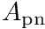 correction factor. This correction factor can be obtained as the ratio of the doses to the cavity from a point source and from a parallel beam, which can be calculated by performing two separate calculations. Experience with CAVRZnrc shows that the gain in efficency when calculating within a single CAVRZnrc run is negligible compared to two separate runs. Considering that the calculation of introduces a great deal of complications in the logic of the code, it was deemed better to not implement this option into
cavity.
Unlike CAVRZnrc, cavity is not restricted to cylindrically symmetric geometries. Practically any chamber can be modeled with this application by using the extensive capabilities of the general purpose geometry package. In addition to the above mentioned functionality, cavity has been extended to allow the calculation of free air chamber (FAC) correction factors and half value layers (HVL). These calculation types are explained in detail in sections FAC correction factors and HVL calculations. Variance reduction techniques, which are available in CAVRZnrc but are not particularly useful for cavity dose calculations are also not implemented (see Variance reduction techniques for more details).
Scoring options
This input block offers many possible options to the user. An example of such an input is shown below:
:start scoring options:
calculation type = Dose or Awall or Fano or FAC or HVL(default: Dose)
:start calculation geometry:
geometry name = name_1
cavity regions = list_of_cavity_region_indices
charge regions = list_of_region_indices_for_charge_scoring
cavity mass = total cavity mass in gram
:stop calculation geometry:
:start calculation geometry:
geometry name = name_2
...
:stop calculation geometry:
...
:start calculation geometry:
geometry name = name_n
...
:stop calculation geometry:
correlated geometries = name_i name_j
...
correlated geometries = name_k name_l
:start fluence scoring:
minimum energy = Emin
maximum energy = Emax
number of bins = N
scale = linear, logarithmic
:stop fluence scoring:
:stop scoring options:
The calculation type input is optional and, if missing, the calculation type will be set to Dose, i.e. the dose to the cavity will be computed. If the calculation type is set to Awall, in addition to the dose also the correction factor will be calculated. If the calculation type is set to Fano, scattered photons will be thrown away and the photon attenuation will be removed by un-weighting so that, apart from potential differences in scattering properties in the cavity and chamber wall, there will be a uniform source of electrons throughout the geometry. This option is useful for testing the accuracy of the EGSnrc condensed history implementation. Calculation types FAC and HVL require the inclusion of yet another input block inside the scoring options input block. These calculation types are explained in detail in sections FAC correction factors and HVL calculations.
The dose to the cavity (and ) can be calculated for several geometries at once. This option is not available in the CAVRZnrc application but has been implemented here primarily for the sake of computing the dose to the cavity of an ionization chamber placed at different locations within a water phantom or free in air and subjected to a beam from a BEAMnrc simulation source. The consequence of this added functionality is that one must specify at least one calculation geometry. The advantage is that a correlated scoring of cavity dose ratios can be requested by linking any combination of two calculation geometries. In cases of small differences between these geometries, the dose ratios will be strongly correlated, resulting in a significant reduction of the variance. Correlated scoring is requested by assigning two geometry names to the correlated geometries key.
The meaning of the various keys defining a simulation geometry should be self explanatory. The reason one must specify the cavity mass is that due to the generality of the geometry package it is not possible to automatically compute the cavity volume and therefore the user must supply this information for proper normalization. Geometrical regions spanning the collecting volume (cavity) are provided by input using the cavity regions key. If no valid region is entered or this input is ignored, no dose to the cavity is calculated. Optionally, one can request to score the net charge in specific geometrical regions using the charge regions key. An affine transformation can be also requested inside this input block. This option could be handy when the coordinates of a particle generated using a BEAMnrc simulation source does not match the coordinates of the geometry defined in cavity. For instance, if a BEAMnrc simulation transports particles down to a scoring plane located perpendicular to the z-axis at z = 50, and the calculation geometry starts at z = 0, one can use the following input block to reposition the particles:
:start calculation geometry:
geometry name = name_of_defined_geometry
...
:start transformation:
translation = 0 0 -50
:stop transformation:
:stop calculation geometry:
FAC correction factors
cavity offers the option for calculating the most relevant FAC correction factors as recently defined in [Mainegra-Hing, Reynaert and Kawrakow, Med. Phys. 35 (8), 2008, 3650-3660]. Corrections for attenuation 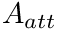, scatter 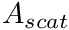, electron loss 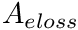, aperture leakage 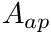 and beam geometry are directly calculated in cavity. A complete and more efficient calculation of FAC correction factors can be done with another C++ application, egs_fac, which includes the calculation of a CPE correction 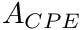 and a correction for the inconsistency between measured and MC calculated attenuation correction factors . This latter code is the one recommended now for the calculation of FAC correction factors.
A typical scoring input block for a type FAC calculation is shown in the following input file snippet
:start scoring options:
calculation type = FAC
:start calculation geometry:
geometry name = fac_2
cavity regions = 3184
aperture regions = 490,1470,2450
cavity mass = 0.009462477073 # cylinder defined by diaphragm and plates
:start transformation:
translation = 0 0 -99.55
:stop transformation:
:stop calculation geometry:
:start kerma scoring:
scoring circle = 0 0 0.45 0.5
scoring plane normal = 0 0 1
muen file = E*muen file name
:stop kerma scoring:
:stop scoring options:
The input block kerma scoring is required to define an air-kerma scoring plane. The FAC point of measurement (POM) is defined to be centered around the scoring plane's center. Air-kerma is scored on a circular surface on this plane by using the product provided in an ASCII file as a function of energy  using a logarithmic scale. Values of 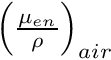 can be calculated using the EGSnrc application
using a logarithmic scale. Values of 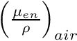 can be calculated using the EGSnrc application g.mortran which now offers the possibility to run a calculation for a whole range of energies using either a linear or logarithmic scale.
- Note
- The cavity mass in the case of a FAC is the mass contained in the cylindrical volume defined by the diaphragm opening and the collecting plates length.
HVL calculations
The ability to include several geometries in one calculation lends itself for HVL calculations (see for instance [Mainegra-Hing and Kawrakow, Medical Physics, 33 (8), 2006, 2683-2690]). The air-kerma 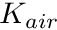 of an X-ray beam passing through absorbers of different thickness (different geometries: geom_1, geom_2 ... geom_ncg) is estimated at an user-defined scoring plane, defined in the HVL scoring input block, for a circular scoring field of radius  . By combining these geometries with a geometry geom_0 without absorber (using the
. By combining these geometries with a geometry geom_0 without absorber (using the correlated geometries input key) one can get the correlated air-kerma ratios which can be used to determine the HVL. If the key absorber thicknesses is included in the HVL scoring input block, then cavity performs a least-squares linear fit to the air-kerma ratios to extract the HVL. While a linear fit is a good approximation for medium and high energy X-ray beams, it is not adequate at low energies. So the user should beware of this when calculating HVL with cavity. An input example of the scoring options input block is shown below.
:start scoring options:
calculation type = HVL
:start calculation geometry:
geometry name = geom_0
cavity regions = not_needed_or_set_to_zero
charge regions = not_needed_or_set_to_zero
cavity mass = not_needed_or_set_to_zero
:stop calculation geometry:
:start calculation geometry:
geometry name = geom_1
...
:stop calculation geometry:
...
:start calculation geometry:
geometry name = geom_ncg
...
:stop calculation geometry:
correlated geometries = geom_1 geom_0
correlated geometries = geom_2 geom_0
...
correlated geometries = geom_ncg geom_0
:start HVL scoring:
scoring circle = x y z R
scoring plane normal = u v w
muen file = E*muen file name
absorber thicknesses = t_1 t_2 ... t_ncg
scatter = yes or no
:stop HVL scoring:
:start fluence scoring:
minimum energy = Emin
maximum energy = Emax
number of bins = N
scale = linear, logarithmic
:stop fluence scoring:
:stop scoring options:
There is a hidden option in the HVL scoring input block which allows one to switch on/off the contribution from scattered photons to the air-kerma. This option can be made use of by using the scatter input key as shown in the example above. This can be useful when one wants to assess to what extend an experimental setup fulfill the "good geometry" conditions recommended for HVL measurements.
Fluence scoring
A fluence calculation for either photons or charged particles can be requested using the following input block:
:start scoring options:
...
:start fluence scoring:
minimum energy = Emin
maximum energy = Emax
number of bins = N
scale = linear, logarithmic
:stop fluence scoring:
:stop scoring options:
Differential fluence  is calculated by scoring the volume-averaged track length for particles with energies E between
is calculated by scoring the volume-averaged track length for particles with energies E between  and
and  using Chilton's fluence concept for any sampling volume V:
using Chilton's fluence concept for any sampling volume V:
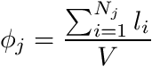
where  is the length of the
is the length of the  particle track. The width of the energy bins is defined by 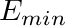, 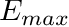 and the number of bins N. Total fluence
particle track. The width of the energy bins is defined by 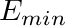, 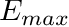 and the number of bins N. Total fluence  is calculated as the sum over all contributions to the fluence
is calculated as the sum over all contributions to the fluence
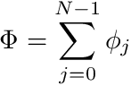
Combined with a calculation of type HVL or FAC, the fluence scoring input block can be used to request the photon fluence spectrum across a circular field of radius centered around the point of measurement (POM) defined at the center of an user-supplied scoring plane (see sections FAC correction factors and HVL calculations).
Charged particle fluence
Charged particle ( 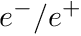) fluence calculation inside the cavity regions can be requested by combining the input block fluence scoring with a calculation of type Dose. To determine the step legth for a charged particle with initial energy slowing down to a final energy 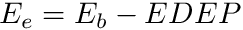 one can use the expression
where  is the restricted stopping power. The integral above can be broken up into discrete energy intervals (bins) to determine the contribution of the particle step to the differential fluence for the bins spanned by the energy interval between 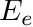 and
is the restricted stopping power. The integral above can be broken up into discrete energy intervals (bins) to determine the contribution of the particle step to the differential fluence for the bins spanned by the energy interval between 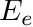 and 
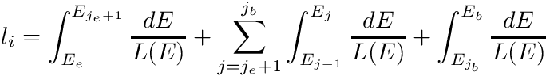
with  the index of the bin where the initial energy
the index of the bin where the initial energy  falls and the bin index where the final energy falls. The terms in the sum contribute to the corresponding differential fluence . Since L(E) is calculated in EGSnrc using logarithmic interpolation
falls and the bin index where the final energy falls. The terms in the sum contribute to the corresponding differential fluence . Since L(E) is calculated in EGSnrc using logarithmic interpolation
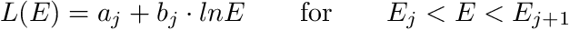
one can approximate the above integrals with the expression
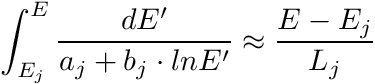
by ignoring a term which is in general close to unity using the arguments from PIRS-701 section 2.4.11.i and becomes
![\[ l_i = \frac{E_{j_e+1} - E_e}{L(E_e)} + \sum_{j=j_e+1}^{j_b}\frac{E_j - E_{j-1}}{L(E_{j-1})} + \frac{E_b - E_{j_b}}{L(E_{j_b})} \]](form_55.png)
the terms in the sum determine the contribution to the differential fluence for bins from  to .
to .
This is the default algorithm for scoring charged particle fluence. Users can also request a FLURZnrc-like fluence calculation by adding the input key method to the fluence scoring input block
:start scoring options:
...
:start fluence scoring:
...
method = flurz # stpwr (default), flurz
...
:stop fluence scoring:
:stop scoring options:
Note that the algorithm implemented in FLURZnrc assumes the stopping power to be constant along the charged particle step and hence is less accurate than cavity's default algorithm. This option is available for comparisons with FLURZnrc calculations. For more details about charged particle fluence calculation with FLURZnrc see PIRS-702, the user manual for the RZ applications.
Variance reduction techniques
For the calculation of dose in the collecting volume of an ionization chamber, cavity implements two variance reduction techniques (VRT): photon splitting and Russian Roulette. Range rejection, which is an approximate efficiency enhancing technique, is also provided. The following VRTs, available in CAVRZnrc but not offered by cavity are
- Exponential transform. This VRT is not provided because it is not useful for calculating the dose to the cavity of an ionization chamber
- Photon forcing. While this technique is quite useful for calculating the dose to the cavity of an ionization chamber, the photon splitting technique has been found to result in a better efficency
Input related to VRT is placed in the variance reduction input block as shown below.
:start variance reduction: :stop variance reduction:
The photon splitting technique, introduced in [Kawrakow and Fippel, Phys.Med.Biol. 45 (2000) 2163] for external photon beam dose calculations and also found to be very useful for ion chamber related simulations, is turned on by including
photon splitting = N_split
in the VRT section of the input file. A rule of thumb for good efficiency is 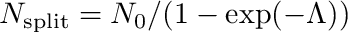, where 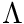 is the approximate number of photon mean-free-paths within the geometry of interest and 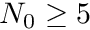. For long production runs one may want to investigate the efficiency as a function of 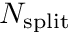 by using relatively short runs with varying splitting numbers before initiating the actual simulation.
Russian Roulette of electrons that can not reach the cavity is specified using
:start range rejection:
rejection = N_r
Esave = E_save
cavity geometry = name of a previously defined geometry
rejection range medium = index of the medium to calculate electron ranges
:stop range rejection:
within the VRT section. In the above 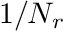 is the probability for survival in a Russian Roulette game played with electrons that can not reach the cavity (and therefore, must be greater than unity) and is the total energy below which electrons that are in the cavity and can not escape the current region are immediately discarded and their energy deposited locally. This is mainly useful for the simulation of free-air chambers subjected to kilovoltage X-rays. The cavity geometry specifies the name of a previously defined geometry, which encompasses the chamber cavity. If this input is missing, or if it specifies a geometry that does not exist, Russian Roulette is still used but on a region by region basis only. The rejection range medium specifies the index of the medium used to initialize electron and positron ranges that are used to decide if the particle can reach the cavity. This should be the medium with the smallest stopping power found outside of the cavity geometry. As with the cavity geometry input, if this input is missing or specifies a non-existent medium, Russian Roulette on a region by region basis only will be used. Note that once an electron has survived a Russian Roulette game, the game is not repeated to avoid the creation of extremely high weight particles. The overall logic of Russian Roulette is as follows
- If the electron can not escape the current region, then
- If it is outside of the cavity, play Russian Roulette
- If it is inside the cavity and its energy is less than , discard it immediately
- Else if the electron is outside of the cavity geometry, calculate the perpendicular distance
 to the cavity geometry and the electron range in the
to the cavity geometry and the electron range in the rejection range medium. If 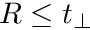, play Russian Roulette.
Range rejection is turned on with the same inputs as needed for Russian Roulette by using . In this case is the energy above which no range rejection is applied. Note that, unlike Russian Roulette, range rejection is an approximation as it ignores the possibility of bremsstrahlung or other radiation produced by the slowing down electron reaching the cavity. One must therefore use a sufficiently low to assure the accuracy of the simulation. In cases where bremsstrahlung is not negligible (e.g. an ion chamber in a water phantom subjected to a 18 MV beam), range rejection with a sufficiently small is less efficient than Russian Roulette. In situations where bremsstrahlung is not important (e.g. ion chamber subjected to a Co-60 beam), Russian Roulette with a suitably chosen is almost as efficient as range rejection. It is therefore recommended to always use Russian Roulette instead of range rejection.
For the efficient estimation of the air-kerma in calculations of type HVL or FAC a forced detection VRT is used which scores the contribution from photons aimed at the scoring field even before crossing it. As already mentioned above, correlated ratios of dose and/or air-kerma values can be scored providing a very efficient way of computing correction factors and determining the HVL. As reported in [Mainegra-Hing and Kawrakow, Medical Physics, 33 (8), 2006, 2683-2690], a 13 times efficiency increase was observed for a 200 kVp X-ray beam when combining this technique with the correlated scoring technique provided by cavity.
Region labels
It is possible to use region labels in cavity, as described in Region labels. Once defined in a geometry, labels can be used anywhere you would otherwise type a list of global region numbers in a cavity input file.
Usage
As any other EGSnrc application, cavity can be started from the command line using
cavity -i input_file -p pegs_file [-o output_file] [-b] [-s] [-P N -j i]
where the arguments in square brackets are optional. With the -o option one can change the name of the output files (by default input_file.xxx is used, where xxx is .egslog for the log file, .egsdat for the data file, etc.). With -b one specifies a "batch" run, i.e. the output is redirected to output_file.egslog. With -s one can force cavity to use a simple RCO instead of a JCF-RCO in parallel runs specified with -P N -j i, where N is the number of parallel jobs and i the job index. Note that on Unix-type systems it is easier to use the exb command to submit parallel jobs
exb cavity input_file pegs_file [p=N] [batch=pbs]
where the batch option specifies the queuing system to be used. For pegsless mode, simply type in the string pegsless instead of pegs_file. The EGSnrc GUI can of course be also used, see see PIRS-877 for more details on running EGSnrc applications.
A simple example input file.
###############################################################################
#
# $Id: cavity.doxy,v 1.12 2009/06/05 19:15:15 mainegra Exp $
#
# A simple example input file for the cavity C++ application.
#
###############################################################################
:start geometry definition:
################################### define the simulation geometry:
# a simple pancake
# chamber with graphite walls
:start geometry:
library = egs_planes
type = EGS_Zplanes
name = c_planes
positions = 0 0.3 0.5 0.8
:stop geometry:
:start geometry:
library = egs_cylinders
type = EGS_ZCylinders
name = c_cyls
radii = 1 1.3
:stop geometry:
:start geometry:
library = egs_ndgeometry
name = chamber
dimensions = c_planes c_cyls
:start media input:
media = 170C521ICRU AIR521ICRU
set medium = 1 1
:stop media input:
:stop geometry:
############################################ define the cavity geometry
# (to be used for Russian Roulette)
:start geometry:
library = egs_planes
type = EGS_Zplanes
name = cav_planes
positions = 0.3 0.5
:stop geometry:
:start geometry:
library = egs_cylinders
type = EGS_ZCylinders
name = cav_cyls
radii = 1
:stop geometry:
:start geometry:
library = egs_ndgeometry
name = cavity
dimensions = cav_planes cav_cyls
:stop geometry:
simulation geometry = chamber
:stop geometry definition:
:start source definition:
########################################### define the source:
# a Co-60 parallel beam
:start source:
library = egs_parallel_beam
name = the_source
charge = 0
:start shape:
library = egs_circle
radius = 1.3
:stop shape:
:start spectrum:
type = monoenergetic
energy = 1.25 # we approximate the Co-60 spectrum by monoenergetic
# 1.25 MeV photons
:stop spectrum:
:stop source:
simulation source = the_source
:stop source definition:
##################################### Run control
:start run control:
ncase = 100000
:stop run control:
##################################### Scoring options
:start scoring options:
calculation type = dose
:start calculation geometry:
geometry name = chamber
cavity regions = 1
cavity mass = 0.0007569981658089966
:stop calculation geometry:
:stop scoring options:
####################################### variance reduction
:start variance reduction:
photon splitting = 50
:start range rejection:
rejection = 100
Esave = 1
cavity geometry = cavity
rejection range medium = 170C521ICRU
:stop range rejection:
:stop variance reduction:
###################################### Transport parameters
:start MC transport parameter:
# You can include here any of the transport parameter options
# understood by EGSnrc
:stop MC transport parameter: